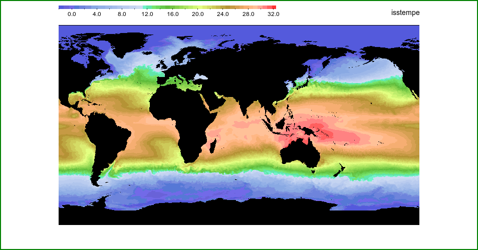
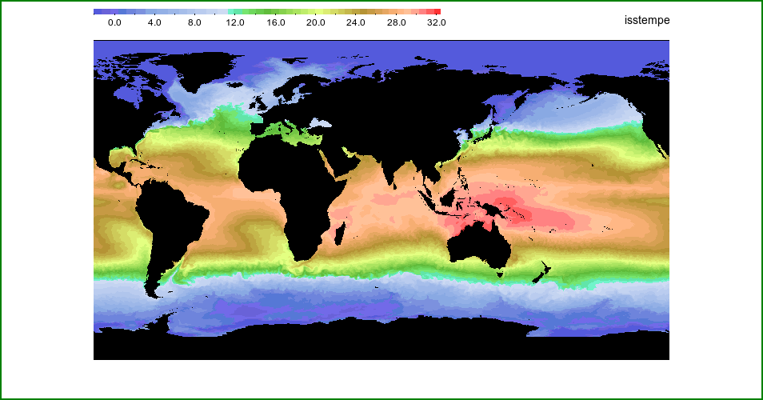

NEMOSIM - Cook book (1)¶
Introduction¶
The easiest way to learn about nemosim is to try some simple examples and gradually add complexity. The distribution comes with sample data from a 1/4 degree gloabl model (surface only) and a 1 degree global model (full 3D) that can be used for these cook book examples. These examples assume that you have successfully compiled nemosim and are running from the main NemoSim directory. You will need to add this directory to your PATH environment and adjust relative paths to the data accordingly if you wish to run from a different directory.
Example 1¶
There are three mandatory arguments which must be provided (either explicitly or via command inheritance). However, these three may not be sufficient if the operating environment is not fully set. For example, an attempt to produce an image of the sea surface temperature from the example 1/4 degree data could be as simple as:
./nemosim -f ./data/ORCA025_2001m01I.nc -o example1.png -d isstempe
Error: bathymetry file not found
bathy_level.nc does not exist
set NEMOBATHYFILE environment variable correctly
or supply the bathy filename with the -bathy option
or run with the -nomask option
This first attempt has been brought up short because nemosim requires instruction on how to identify masked (land/seabed) values within the dataset. For many datasets a single fillvalue will be sufficient but when, for example, plotting a sub-surface layer it is useful to distinguish between land points and sea-bed. To do this, nemosim requires additional information about the model bathymetry; in particular the number of wet levels in each grid column. Traditionally, this information is held in the bathy_level.nc input file used in a constant z-level NEMO configuration. Most groups will be using partial z-levels these days and will employ a bathy_meter.nc file. A bathy_level.nc file can be created from such runs using the mask.nc file that NEMO will create when told to via the nn_msh namelist parameter. The tmask dataset in the mask.nc file can be vertically summed to provide the Bathy_level field, e.g.:
ncap2 -v -sBathy_level=tmask.float().ttl($z) mask.nc bathy_level.nc
ncks -A -C -4 -v nav_lon,nav_lat bathy_meter.nc bathy_level.nc
If the Bathy_level dataset exists in an accessible NetCDF file then this file can be
named via the -bathy command-line option or the NEMOBATHYFILE environment variable.
If the dataset is not available then adding the -nomask option will bypass the
requirement and treat the whole dataset as valid data with an assumed fill value of 0.0.
e.g.:
./nemosim -f ./data/ORCA025_2001m01I.nc -o example1.png -d isstempe -nomask
appears to have worked and an image will have been created. This can be viewed using your favorite image viewing utility. ImageMagick’s own display utility is as good as many and will have been included when the ImageMagick libraries were built or installed. Thus:
display example1.png
will reveal the image below. Alternatively, this can be done in a single step by adding the -show option:
./nemosim -f ./data/ORCA025_2001m01I.nc -o example1.png -d isstempe -nomask -show
{kind=link}
In this case, the plot is satisfactory because the land values in the SST field plotted
are set to zero in the dataset. The green border has been added to the web display to help
illustrate the edges of the image. If the fill value is not zero or more than one fill
value is used (for example to distinguish between land and seabed locations) then two
values can be supplied via the -vmask option. By default, points matching the first
masked value will be plotted in black, points matching the other mask value will be
plotted in gray.
Common enhancements¶
1. Adding a colour-scale¶
The first common enhancement is to add a colour-scale. Nemosim allows rectangular colourbars to be added to any of the four possible margins (left, right, bottom, top). Selecting a position automatically adds margins of a size suitable for the purpose:
./nemosim -f ./data/ORCA025_2001m01I.nc -o example1a.png -d isstempe -nomask -show -spos 1
{kind=link}
Position 1 places the scale in the lefthand margin; 2 right-hand; 3 bottom and 4 top as follows:
./nemosim -f ./data/ORCA025_2001m01I.nc -o example1a.png -d isstempe -nomask -show -spos 1
./nemosim -f ./data/ORCA025_2001m01I.nc -o example1b.png -d isstempe -nomask -show -spos 2
./nemosim -f ./data/ORCA025_2001m01I.nc -o example1c.png -d isstempe -nomask -show -spos 3
./nemosim -f ./data/ORCA025_2001m01I.nc -o example1d.png -d isstempe -nomask -show -spos 4
{kind=link}
 

{kind=link}
2. Adding titles¶
By default, nemosim does not display a plot title and simply labels the colour-scale with
the NetCDF dataset’s short name. These are rarely meaningful to anyone other than a NEMO
aficionado but it is simple to add a title with the -title option and to override the
default scale title with the -stitle option, e.g.:
./nemosim -f ./data/ORCA025_2001m01I.nc -o example1e.png -d isstempe -nomask -show -spos 1 \
-stitle SST -title "Sea Surface Temperature"
{kind=link}
Advanced options are available to control the placement, font and font-size of all these elements. These options will be described later; for now it is enough to note the capability. Please note also that strings containing spaces must be quoted (either single or double quotes).
3. Changing style colours¶
Foreground and background colours are, by default, black and white respectively. Other
colours may be chosen via the -fg, -bg, -bfg and -bfg options which set
the main image foreground and background colours and the border area foreground and
background colours respectively. Colours may be given as standard colours names (such as
-bg darkgreen) or hexadecimal RGB values. The following example illustrates this by
setting the border background to a mid-gray with RGB value (166 166 166):
./nemosim -f ./data/ORCA025_2001m01I.nc -o example1f.png -d isstempe -nomask -show -spos 1 \
-stitle SST -title "Sea Surface Temperature" \
-bbg "#a6a6a6"
{kind=link}
4. Using two input fields¶
The final example in this introductory set illustrates how to provide a second data field
to nemosim. Commonly, the second data-field is combined with the first as either a sum,
difference or speed calculation (-sum, -diff, -uv, respectively). For these,
the second dataset is named via the -d2 option. For cases where the second dataset
resides in a separate datafile, this can be provided via the -f2 option (not used
here). A special treatment of the second component is provided by the -overlay option.
For this, the second dataset is not combined with the first but is used to create its own
image which is overlaid on the image produced by the first dataset. This is only effective
if the second dataset has a limited geographical coverage but is ideal for overlaying
sea-ice on other state variables. The merging occurs in pixel space (i.e. after the
generation of 8-bit images) with the second image selected everywhere its pixel value is
above a certain threshold. Normally, this coincides with the minimum value on the data
range used to plot the second field (as given via the -limits2 option). In the
following example, the result is the SST field visible in sea-ice free regions with the
ice concentration elsewhere:
./nemosim -f ./data/ORCA025_2001m01I.nc -o example1g.png -d isstempe -nomask -show -spos 1 \
-title "Sea Surface Temperature with sea ice"\
-stitle SST -d2 ileadfra -limits2 0.0 0.8 \
-overlay -bbg "#a6a6a6" -stitle2 "ice conc."
{kind=link}
Note also the automatic generation of a second colour-scale (this will be placed in the
opposite margin to that selected for the main colour-scale) and the use of the
-stitle2 option to give a more meaningful title to the second colour-scale.